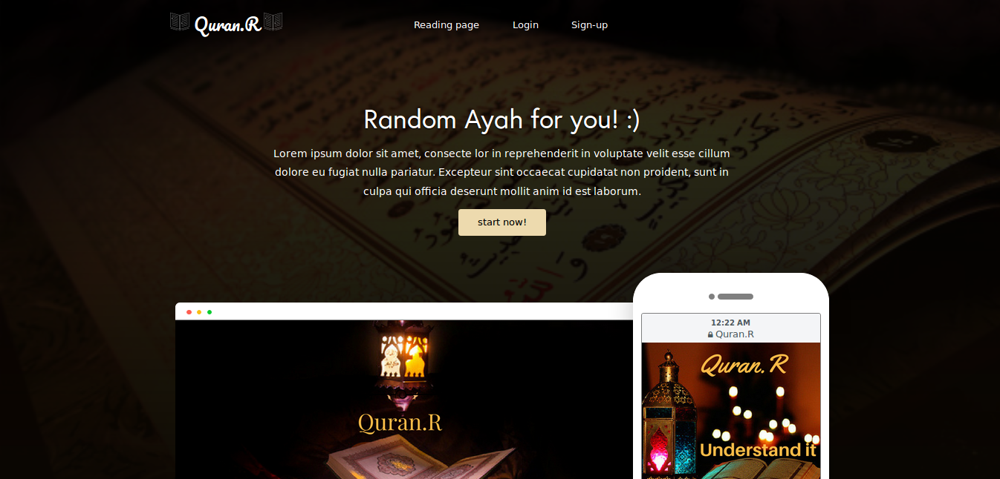

About me
I'm Fatima from Algeria, I'm 22 years old, passionate about Web development, I love and enjoy coding, learning and discovering new computer science technologies, Also passioante about AI. I'm self-motivated, creative and life-long learner.
Experience & Education
➡️ Ex member of GDG Oran (Google Developer Group Oran) a group of new Techs enthusiasts. This community aims to develop creativity and multidisciplinary values besides its main field related to computer science.
➡️ Ex member of Team Open Minds Oran, a group of computer science students of Oran university, we liked to try, share, learn and work for an open-minded generation, we spread the open-source culture and we used to break the ice with new technologies.
➡️ Gradute computer science and I'm currently doing my Masters (inchaa allah) in ArtificiaI Intelligence (AI) and decision support systems at Oran University1, Ahmed Ben Bella
My projects
University scolarity service platform
This is my degree project. The purpose of this platform is to provide users of Scolarity service a simplification of management including the ease of performing tasks, clarity and speed while remaining secure. Coded principally with python django, html5 CSS3 and JS, used (bootstrap). The code is actullay < PRIVATE />
The front of a Quran web application
I realised the front-end of this Quran web application that allow people to listen and read Quran. I Coded with html5, scss and JS. The front code is actullay open source, avaible in my Github account. < See the code />
The front-end of this Form
I designed this Form then cooded it with html5, css3 and JS. the source code is open source, avaible in my Github account. < See the code />
Mysterious Numbers game
I designed and cooded Mysterious Numbers game with HTML5 and CSS3 for the front-end. JS for back-end. the source code is open source, avaible in my Github account. < See the code />
Clinc website
A representative and advertising static website for a real clinic. the source code is open source, avaible in my Github account. < See the code />
dashbord platform
A platform for logos designers using django, where the designer have a dashbord where he can post his logos, check his comands and see others opinion about his design, he can also give his opinion about the others designs... The client can see, comment and comand a logo. the source code is actullay < PRIVATE />
Skills
- HTML5
- CSS3
- Jquery
- bootstrap
- Python
- Django
- C++
- java
- XML
- R
- javafx
- openCv
- UML2
- AGILE
- MVC
- MVT
- Pug
- SASS
- SQL
- Prolog
- git/github
- Project management
- design
- photoshop
- public speaking
My blog posts
And I also love to blog sometime about what I'm doing, learning and descroving.
Pug or HTML
I enjoy coding with that awesome pug which give me a powerful new way to write markup.